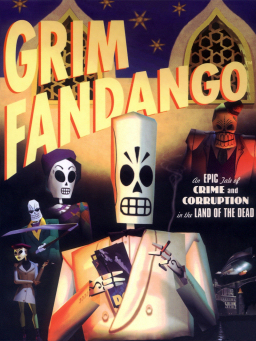

Dialogue, character, world, and imagination cement Grim Fandango among the best adventure games. Set in the Mexican Land of the Dead, where everyone’s a skeleton or a demon, the recently deceased have to work off any crimes they may have committed before taking the treacherous four-year journey to get into the Ninth Underworld. It is a cleverly-realised world with film noir influences and a big dollop of crime and corruption. The game stars some of the finest characters ever written, including protagonist Manny Calavera, who must try to save Mercedes Colomar, the woman he thinks he wronged. Friendly, car-obsessed demon Glottis would not be out of place in the best Disney/Pixar movies, and Manny is one of the most effortlessly cool and likeable player characters in an adventure game. The often obtuse puzzles can derail the pacing, but just exploring and interacting with this beautiful world makes up for these irritants. Tim Schafer’s journey through Mexican folklore still represents the pinnacle of proper movie-quality storytelling in videogames – just don’t mention those wretched demon beavers.
download
Minecraft is a sandbox video game developed by Mojang. Minecraft was created by Markus "Notch" Persson in the Java programming language and was released as a public alpha for personal computers in 2009 before officially releasing in November 2011, with Jens Bergensten taking over development around then. It has since been ported to various platforms and is the bestselling video game of all time, with over 180 million copies sold across all platforms and over 112 million monthly active players by 2019. In Minecraft, players explore a blocky, procedurally-generated 3D world, and may discover and extract raw materials, craft tools, build structures or earthworks, and depending on game mode, can fight computer-controlled "mobs", as well as either cooperate with or compete against other players in the same world. These modes include a survival mode, in which players must acquire resources to build the world and maintain health, and a creative mode, where players have unlimited resources. Players can modify the game to create new gameplay mechanics, items, and assets. Minecraft has been critically acclaimed, winning several awards and being cited of the most influential and greatest video games of all time. Social media, parodies, adaptations, merchandise, and the annual MineCon conventions played large roles in popularizing the game. It has also been used in educational environments, especially in the realm of computing systems, as virtual computers and hardware devices have been built in it. In 2014, Mojang and the Minecraft intellectual property were purchased by Microsoft for US$2.5 billion. A number of spin-off games have also been produced, such as Minecraft: Story Mode, Minecraft Dungeons, and Minecraft Earth.

download